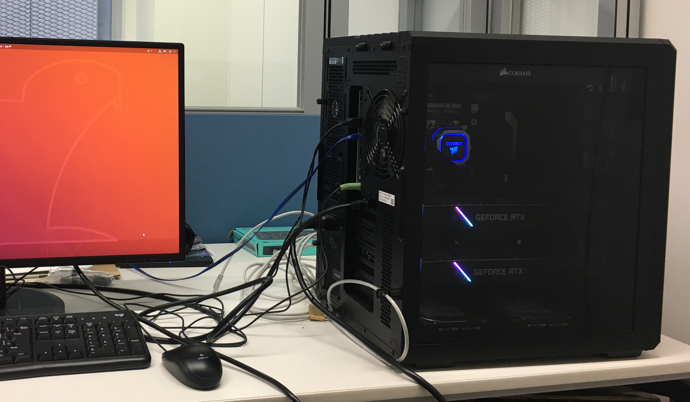

医学科学生用計算機 (計算サーバ)
医学科学生用の計算サーバが、2019年度の学部予算により新たに導入されました。 管理運用はPython会が担当しています。
会員によるテストほか必要な準備が整いましたので、2020年8月下旬より、会員以外も含めた大阪大学医学部医学科学生が利用可能とします。
GPUを用いた機械学習、バイオインフォマティクス、各種統計解析、シミュレーション計算など、ドライ系の研究・学習全般に利用することができます。
利用申請の方法・書式など
利用を希望する学生は、以下の利用規則を熟読のうえ、利用許可申請書に記入して提出してください。 (直接提出または、スキャンや写真でも構いません。)
各学年の担当者が受け付けますが、担当者がわからない場合は Contact から連絡してください。
- 医学科学生用計算機 利用規則 (pdf)
- 医学科学生用計算機 利用許可申請書書式 (pdf), (Google Docs)
申請後
申請内容に問題なければ、計算機上のアカウントを発行し、また利用者のSlackワークスペースに登録します。 接続方法ほか、利用に関する具体的な案内はそちらで行います。
計算機スペックなど
- CPU : Core i9-9900X (3.5 GHz, 10 cores, 20 threads)
- GPU : GeForce RTX 2080Ti (VRAM: 11GB) x2
- Main Memory : 128GB
- ユーザデータ保存領域 : 15TB
- OS : Ubuntu 20.04 LTS Server
- ホスト名 : Alice
- 設置場所 : 医学科全学年自習室 (最先端医療イノベーションセンター棟2F)
